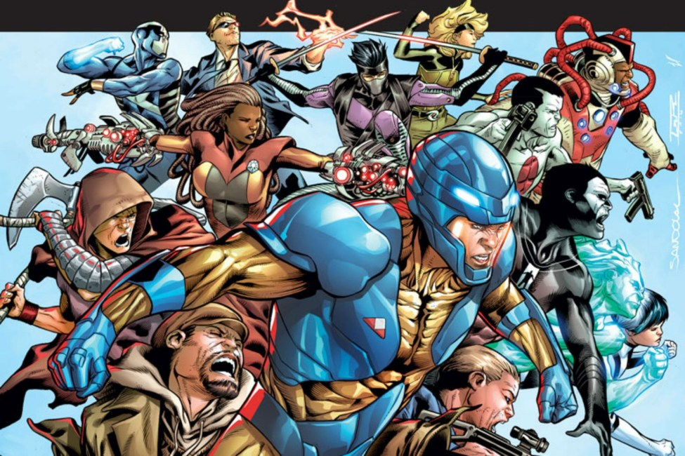
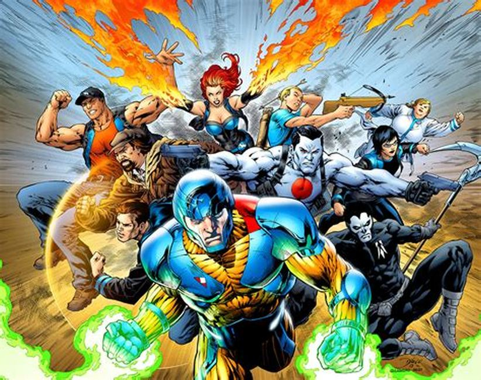
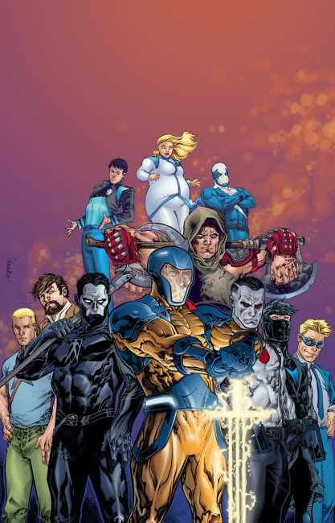
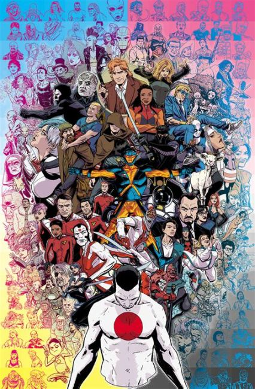
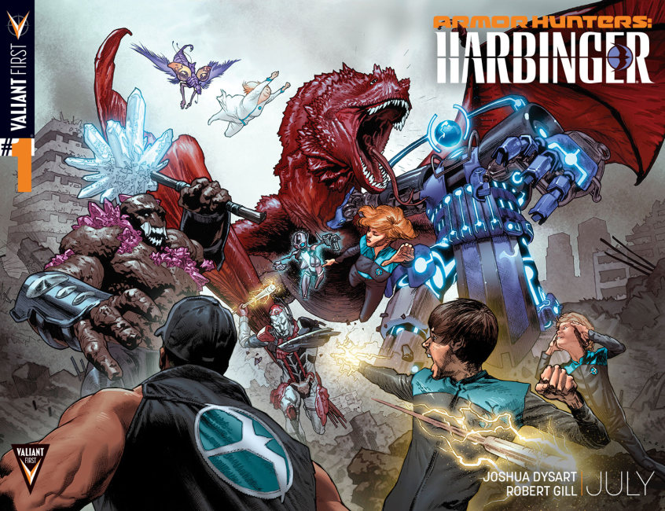
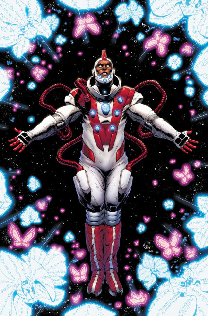

Founded by Jim Shooter and Steven Massarsky in 1989.
×






❮
❯
Valiant Comics is an American publisher of comic books and related media. The company was founded in 1989 by former Marvel Comics editor-in-chief Jim Shooter and lawyer and businessman Steven Massarsky. In 1994, the company was sold to Acclaim Entertainment. After Acclaim declared bankruptcy in 2004, the company was restarted as part of Valiant Entertainment by entrepreneurs Dinesh Shamdasani and Jason Kothari in 2005.
Valiant Entertainment launched its publishing division in 2012 as part of an initiative dubbed the "Summer of Valiant", winning Publisher of the Year and being nominated for Book of the Year at the Diamond Gem Awards. Valiant has set sales records, and was the most nominated publisher in comics at the 2014, 2015 and 2016 Harvey Awards, releasing the biggest-selling independent crossover event of the decade with "Book of Death" in 2015. Valiant was acquired by DMG Entertainment in 2018.
In 2015, Valiant announced that they had partnered with Sony Pictures to produce five films based on the Bloodshot and Harbinger comic books.
X-O Manowar 52 issues from March 2017 - Present
X-O Manowar 51 issues from May 2012 - September 2016
X-O Manowar 13 issues 2011 - 2012
Ninja-K 28 issues from November 2017 - December 2018
Ninjak 27 issues from March 2015 - May 2017
Archer and Armstrong 26 issues August 2012 - October 2014
Harbinger 26 issues June 2012 - July 2014
Unity 26 issues November 2013 - December 2015
Bloodshot Salvation 24 issues September 2017 - August 2018
Livewire 24 issues December 2018 - Present
Quantum and Woody! 24 issues December 2017 - November 2018
Shadowman 22 issues March 2018 - Present
Bloodshot Reborn 19 issues April 2015 - March 2017
Rai 18 issues May 2014 - August 2016
Shadowman 18 issues November 2012 - March 2014
Bloodshot Rising Spirit 16 issues November 2018 - Present
Imperium 16 issues February 2015 - May 2016
Bloodshot 14 issues July 2012 - August 2013
Psi-Lords 14 issues June 2019 - Present
Wrath of the Eternal Warrior 14 issues November 2015 - December 2016
Quantum & Woody 13 issues July 2013 - March 2014